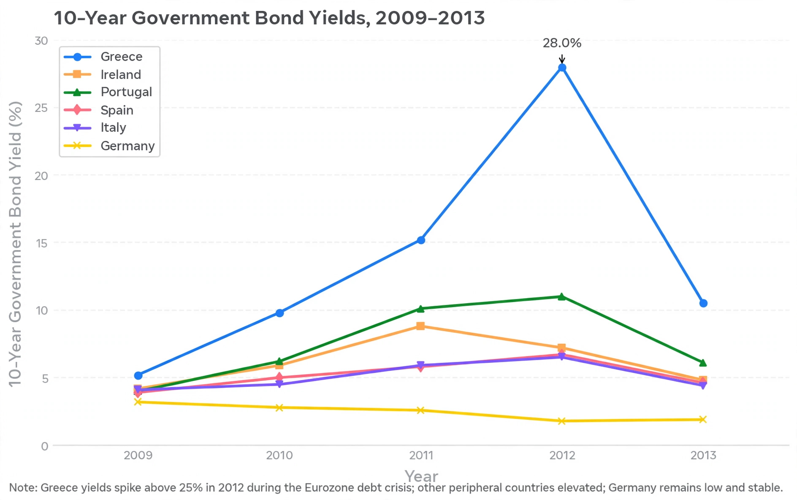

From Wikipedia, the free encyclopedia · Redirected from "Euro area crisis"
The European debt crisis, often also referred to as the euro area crisis or the European sovereign debt crisis, was a multi-year debt crisis that took place in the European Union from 2009 until the mid-2010s. Several eurozone member states (Greece, Portugal, Ireland and Cyprus) were unable to repay or refinance their government debt or to bail out over-indebted banks under their national supervision without the assistance of third parties like other eurozone countries, the European Central Bank (ECB), and the International Monetary Fund (IMF). Spain and Italy also faced severe market pressure.
The crisis combined several factors: the global financial crisis of 2007–2008, real-estate bubbles, large current-account imbalances within the monetary union, fiscal profligacy in some states, and the "doom loop" linking weak banks and weak sovereigns. Euro members could not devalue their currency or set independent interest rates, and investors who had treated all eurozone sovereign debt as nearly equivalent abruptly repriced default risk.

In October 2009, Greece's newly elected government revealed that the budget deficit was far larger than previously reported — eventually revised above 15% of GDP. Greek bond yields soared, and in May 2010 Greece received a €110 billion bailout from the eurozone and IMF. Ireland followed in November 2010 (€85 billion) after guaranteeing its collapsing banks; Portugal in May 2011 (€78 billion); Spain received banking assistance in 2012, and Cyprus a bailout in 2013 that imposed losses on uninsured depositors ("bail-in").
The EU created the European Financial Stability Facility and then the permanent European Stability Mechanism (ESM), imposed fiscal austerity and structural reforms through "Troika" (Commission–ECB–IMF) programmes, and agreed a fiscal compact. In July 2012, ECB President Mario Draghi pledged to do "whatever it takes" to preserve the euro, and the ECB announced Outright Monetary Transactions, a conditional sovereign bond-buying programme that sharply reduced yields. A banking union, with ECB single supervision, followed from 2014.
Greece received two further programmes (2012, including private-sector debt restructuring, and 2015), suffered a depression in which GDP fell by roughly a quarter, and briefly faced exit from the euro ("Grexit") during the 2015 referendum standoff. Yields and spreads normalised by the mid-2010s, but high public debt in several member states remains a legacy of the crisis. For the broader eurozone framework see the related euro area crisis discussion and monetary topics such as the money supply.
Categories: European debt crisis · Eurozone · Financial crises